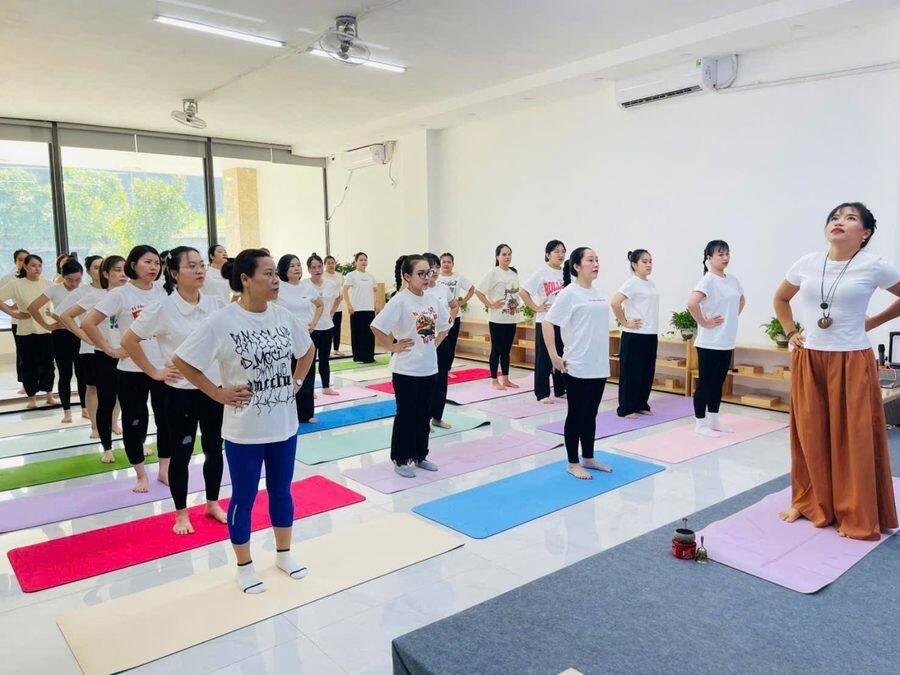

Yoga người lớn · Giới và luật
Giới và luật trong yoga: tập trên thảm, sống ngoài đời
Người ta hay nhìn yoga qua những tấm ảnh. Chân vắt qua đầu. Người cong như cây cầu. Nhưng có một phần của yoga không chụp ảnh được. Nó nằm ở cách mình nói với con lúc sáng muộn giờ. Ở cách mình nghe bố mẹ kể lại một chuyện cũ lần thứ mười.
Phần ấy có tên. Giới và luật. Tiếng Phạn là Yama và Niyama.
Giới và luật nằm ở đâu trong yoga? Trong Yoga Sutra của Patanjali, con đường yoga có tám bậc. Hai bậc đầu tiên là Yama (5 giới: cách mình sống với người khác) và Niyama (5 luật: cách mình sống với chính mình). Asana, tức các tư thế, chỉ là bậc thứ ba.
- 1. Yama
- 2. Niyama
- 3. Asana
- 4. Pranayama
- 5. Pratyahara
- 6. Dharana
- 7. Dhyana
- 8. Samadhi
Đứng trước asana. Cô nghĩ thứ tự ấy có lý do.
Một người tập rất dẻo mà trong lòng vẫn đầy giận, đầy lo, thì ra khỏi thảm là mọi thứ lại như cũ. Vai lại nhô lên sát tai. Hơi thở lại ngắn. Đêm lại khó ngủ. Cơ thể và tâm không tách rời nhau được.
Cô không nói giới luật chữa được bệnh. Nhưng cô thấy thế này: tâm bớt giận, bớt lo, bớt so đo, thì ngủ ngon hơn. Thở sâu hơn. Cơ thể có chỗ để nghỉ và hồi lại. Còn tư thế thì tập lâu dài được, vì mình không còn ép mình nữa. Thanh thản trong lòng và khỏe trong người, với cô, đi cùng một đường.
Vì vậy, song song với giờ tập trên thảm, người tập yoga luôn mang theo giới và luật vào đời sống. Không phải ở đâu xa. Ở ngay trong bếp, trong phòng ngủ của con, trong cuộc gọi về quê.
Dưới đây, mỗi giới, mỗi luật cô viết kèm ví dụ ở bốn vai mà nhiều chị em trong lớp cô đang cùng lúc gánh: người mẹ, người vợ, người con, và với những ai đang dạy, vai huấn luyện viên yoga.
Năm giới (Yama): sống với người khác
1Không làm hại Ahimsa
Giới đầu tiên. Cũng là giới cô thấy khó nhất.
Không làm tổn thương ai. Bằng tay, bằng lời, và cả bằng ý nghĩ. Trong chữ “ai” ấy có cả chính mình.
Trên thảm tập: Không ép cơ thể vào tư thế khi nó đang báo đau. Cơ thể không phải đối thủ để thắng.
👩👧 Người mẹ
Con làm đổ cốc sữa đúng lúc sắp muộn học. Câu quát đã lên tới cổ. Dừng một hơi thở. Rồi nói: “Mẹ con mình lau cùng nhé.” Không quát không phải là chiều con. Là giữ cho con một chỗ an toàn ngay trong nhà mình.
💞 Người vợ
Lúc giận, lời nói dễ thành dao. Chờ cơn nóng qua đi rồi mới nói. Nói về việc, đừng chê con người. “Em buồn vì anh về muộn mà không nhắn” nghe khác hẳn “Anh lúc nào cũng vô tâm”.
🙏 Người con
Bố mẹ có tuổi hay hỏi đi hỏi lại một chuyện. Trả lời lần thứ năm bằng giọng nhẹ như lần đầu. Vậy thôi. Đó cũng là không làm hại.
🧘♀️ Huấn luyện viên yoga
Cô không ấn học viên xuống sâu hơn. Bàn tay chạm vào để gợi ý, không để ép. Cô cũng không so người này với người kia trước cả lớp. Còn với chính mình: hôm nào lưng mỏi, cô dạy bằng lời nhiều hơn, không cố làm mẫu.
Thử ngay hôm nay: Hôm nay, để ý một câu định nói trong lúc bực. Thở ra một lần. Rồi mới nói.
2Chân thật Satya
Nói thật. Sống thật.
Nhưng chân thật đi cùng giới thứ nhất. Thật mà không làm đau người khác vô cớ. Có những sự thật cần chọn lúc, chọn lời.
Trên thảm tập: Thành thật với cơ thể của hôm nay. Không phải cơ thể của tuần trước, càng không phải của năm hai mươi tuổi.
👩👧 Người mẹ
Hứa với con một quyển truyện trước khi ngủ thì đúng một quyển, đọc trọn. Khi mẹ sai, mẹ nói: “Mẹ xin lỗi con.” Con học sự thật từ những lần như thế, hơn mọi lời dạy.
💞 Người vợ
Không giữ chuyện trong lòng rồi để nó lên men thành giận. Mệt thì nói mệt. Cần giúp thì nhờ. Người bên cạnh không đọc được ý nghĩ của vợ.
🙏 Người con
Đi làm xa, nhiều người chỉ báo về nhà một câu “con ổn cả”. Đôi khi kể thật một chút khó khăn, bằng lời nhẹ nhàng, lại làm bố mẹ thấy gần con hơn.
🧘♀️ Huấn luyện viên yoga
Học viên hỏi điều cô chưa chắc, cô nói: “Cô chưa chắc, để cô tìm hiểu rồi trả lời em.” Cô cũng không nói quá về yoga. Yoga giúp được nhiều thứ. Nhưng không chữa được mọi bệnh, và cô không hứa như vậy.
Thử ngay hôm nay: Chọn một lời hứa nhỏ. Với con, với người thân, hay với chính mình. Giữ cho trọn.
3Không lấy của người Asteya
Không chỉ là không lấy đồ của ai.
Còn là không lấy thời gian, công sức, ý tưởng của người khác. Không lấy đi niềm vui hay sự tự tin của ai đó. Cả cơ hội tự làm của một đứa trẻ cũng thế.
Trên thảm tập: Không mượn tư thế của người bên cạnh để đo mình. Nhìn sang thảm khác là đang rời khỏi thảm của mình.
👩👧 Người mẹ
Làm thay con mọi việc cũng là lấy đi của con một cơ hội. Để con tự buộc dây giày, tự xúc cơm. Chậm năm phút cũng được. Năm phút ấy là của con.
💞 Người vợ
Không giành hết thời gian riêng của chồng bằng những đòi hỏi không cần. Cũng không để ai giành hết thời gian riêng của mình. Ai cũng cần một khoảng nhỏ để thở.
🙏 Người con
Thời gian ngồi với bố mẹ không lấy lại được. Ngồi ăn cơm mà mắt dán vào điện thoại là lấy mất bữa cơm ấy của bố mẹ.
🧘♀️ Huấn luyện viên yoga
Đến lớp đúng giờ. Kết thúc đúng giờ. Dùng bài tập, hình ảnh hay ý tưởng của thầy cô khác thì cô ghi rõ là của ai. Học viên đã dành cho cô một giờ, cô dạy đủ và hết lòng cả giờ ấy.
Thử ngay hôm nay: Bữa tối nay, úp điện thoại xuống bàn. Hoặc để hẳn ở phòng khác.
4Tiết độ, giữ năng lượng Brahmacharya
Nghĩa gốc gắn với đời sống thanh tịnh của người tu hành.
Với người tập có gia đình như mọi người ở lớp cô, giới này là sống điều độ. Ăn vừa đủ. Ngủ đủ. Chung thủy. Dùng năng lượng vào đúng chỗ, không phung phí sức mình.
Trên thảm tập: Tập vừa sức. Ra khỏi lớp thấy nhẹ người, không phải rã rời.
👩👧 Người mẹ
Mẹ kiệt sức thì rất khó dịu dàng. Chợp mắt hai mươi phút lúc con ngủ trưa không phải lười. Là giữ sức cho cả buổi chiều với con.
💞 Người vợ
Chung thủy trong việc làm, và cả trong lời nói. Khi nói về chồng với người ngoài, vẫn giữ sự tôn trọng.
🙏 Người con
Điều độ ngay cả trong việc lo cho bố mẹ. Ôm hết mọi việc một mình rồi gục thì chẳng giúp được ai lâu. Chia bớt cho anh chị em.
🧘♀️ Huấn luyện viên yoga
Một ngày dạy liền nhiều lớp là giọng khàn, người mỏi. Cô học cách nhận lớp vừa sức, để lớp cuối ngày học viên vẫn gặp một cô giáo còn tỉnh táo. Trước giờ dạy, cô ăn nhẹ thôi.
Thử ngay hôm nay: Tối nay đi ngủ sớm hơn ba mươi phút. Coi đó là một bài tập yoga.
5Không tham, không bám giữ Aparigraha
Lấy vừa đủ. Buông những gì không cần.
Đồ đạc thì dễ thấy. Khó buông hơn là những kỳ vọng mình đặt lên người khác.
Trên thảm tập: Không bám vào tư thế từng làm được hồi trước. Hôm nay làm được tới đâu, ở yên tới đó.
👩👧 Người mẹ
Con thích vẽ hơn học đàn. Mẹ đặt kỳ vọng của mình xuống một chút, để nhìn rõ con thật đang ở trước mặt.
💞 Người vợ
Không bắt chồng phải giống chồng nhà người ta. Không giữ chặt, không soát từng tin nhắn. Tin nhau cũng là một cách buông.
🙏 Người con
Bố mẹ có nếp sống riêng, nhiều khi khác hẳn mình. Không ép bố mẹ đổi theo ý con, dù con nghĩ là vì tốt cho bố mẹ.
🧘♀️ Huấn luyện viên yoga
Học viên chuyển sang lớp khác, cô vẫn chúc họ tập tốt. Cô không cần lớp đông nhất. Cô cần học viên tập an toàn và khỏe hơn lên.
Thử ngay hôm nay: Tìm một món đồ trong nhà đã lâu không dùng. Cho đi.

Năm luật (Niyama): sống với chính mình
6Thanh sạch Saucha
Sạch thân thể. Sạch nơi ở. Sạch đồ ăn.
Và sạch cả những gì mình cho vào đầu mỗi ngày.
Trên thảm tập: Thảm sạch, người sạch, bụng nhẹ. Bước lên thảm là để chuyện ngoài kia lại.
👩👧 Người mẹ
Một góc nhà gọn gàng làm cả nhà dịu xuống. Mẹ dạy con cất đồ chơi sau khi chơi. Mẹ lọc bớt những gì con xem trên màn hình. Đó cũng là thanh sạch.
💞 Người vợ
Bữa cơm nấu từ đồ tươi, đơn giản thôi. Và không mang cơn bực ở chỗ làm về bày ra mâm cơm.
🙏 Người con
Về thăm nhà, dọn giúp căn phòng, giặt giúp cái chăn. Việc nhỏ. Mà bố mẹ thấy mình được con để ý.
🧘♀️ Huấn luyện viên yoga
Phòng tập thông thoáng, thảm lau sau mỗi lớp. Móng tay cắt ngắn trước khi chạm chỉnh cho học viên. Trước giờ dạy, cô ngồi yên vài phút, để chuyện riêng lại ngoài cửa phòng tập.
Thử ngay hôm nay: Lau tấm thảm tập của mình. Rồi ngồi lên đó, thở ba hơi thật chậm.
7Biết đủ Santosha
Bằng lòng với những gì đang có. Mà vẫn bước tiếp.
Biết đủ không phải buông xuôi. Là thôi chạy theo cảm giác lúc nào cũng thiếu.
Trên thảm tập: Hôm nay tay chạm tới đầu gối thì mừng tới đầu gối. Ngày mai tính tiếp.
👩👧 Người mẹ
Con được điểm 7. Con đã cố. Mẹ nhìn thấy sự cố gắng ấy trước, rồi mới tới con số.
💞 Người vợ
Nhà chưa to. Xe chưa đẹp. Nhưng bữa tối vẫn đủ người ngồi quanh mâm. Biết đủ là nhìn thấy được điều đó.
🙏 Người con
Bố mẹ không cho con được mọi thứ như bố mẹ người khác. Nhưng đã cho những gì bố mẹ có. Lòng biết ơn ấy làm con nhẹ đi nhiều.
🧘♀️ Huấn luyện viên yoga
Có buổi lớp chỉ ba học viên. Cô vẫn dạy như lớp ba mươi người. Ba người ấy đã chọn đến.
Thử ngay hôm nay: Trước khi ngủ, nhớ lại ba điều tốt trong ngày. Nhỏ thôi cũng được.
8Kỷ luật, ngọn lửa rèn luyện Tapas
Chữ tapas có gốc nghĩa là sức nóng.
Một ngọn lửa nhỏ bên trong giữ mình đều đặn. Cả vào những ngày không muốn chút nào.
Trên thảm tập: Mỗi ngày tập một ít. Đều. Hơn là một buổi tập dồn thật nhiều rồi bỏ cả tuần.
👩👧 Người mẹ
Giữ nếp đọc sách cho con mỗi tối, kể cả hôm mẹ mệt. Mười phút thôi. Nhưng đều.
💞 Người vợ
Giữ những thói quen nhỏ của nhà mình: bữa sáng cùng nhau, một lời cảm ơn. Giữ được đều đặn cũng là kỷ luật.
🙏 Người con
Gọi điện về cho bố mẹ vào một giờ cố định mỗi tuần. Rồi bố mẹ sẽ chờ cuộc gọi ấy.
🧘♀️ Huấn luyện viên yoga
Cô vẫn tự tập, vẫn đi học. Khóa 200 giờ năm 2017, rồi 300 giờ, rồi 500 giờ năm nay. Không phải để thêm một tờ chứng chỉ. Để khi đứng trước lớp, điều cô dạy là điều cô đã tự tập qua.
Thử ngay hôm nay: Chọn một việc nhỏ và làm đủ bảy ngày liền. Năm phút ngồi thở mỗi sáng chẳng hạn.
9Tự học, tự nhìn lại mình Svadhyaya
Đọc sách, học từ thầy, từ kinh sách.
Và học chính mình. Nhìn lại cách mình phản ứng, như nhìn một người khác. Không phán xét. Chỉ nhìn.
Trên thảm tập: Lắng nghe cơ thể. Bên nào cứng hơn. Hơi thở dừng ở đâu. Không cần sửa ngay.
👩👧 Người mẹ
Sau một lần lỡ quát con, ngồi lại hỏi: lúc ấy mẹ giận con thật, hay đang mệt vì chuyện khác? Hiểu ra rồi, lần sau sẽ nhận biết sớm hơn một nhịp.
💞 Người vợ
Để ý những câu hay bật ra lúc vợ chồng to tiếng. Chúng hay lặp lại. Và thường đến từ một nỗi sợ cũ, chẳng liên quan gì tới chuyện hôm nay.
🙏 Người con
Nhìn lại cách mình nói chuyện với bố mẹ. Có khi đã lớn lắm rồi, mà vẫn gắt với bố mẹ y như hồi mười lăm tuổi.
🧘♀️ Huấn luyện viên yoga
Sau lớp, cô hay nghĩ lại: phần nào học viên thấy khó, chỗ nào mình giảng chưa rõ. Đọc lại sách cũ. Mỗi lần đọc lại thấy ra thêm một điều.
Thử ngay hôm nay: Tối nay viết ba dòng: điều gì hôm nay làm mình khó chịu nhất, và vì sao.
10Buông xả, phó thác Ishvara Pranidhana
Làm hết lòng. Rồi buông kết quả.
Tin vào một điều lớn hơn mình. Mỗi người gọi điều ấy bằng một tên khác nhau, cũng không sao.
Trên thảm tập: Savasana, tư thế nằm thư giãn cuối buổi. Không làm gì cả. Để cơ thể được nghỉ.
👩👧 Người mẹ
Mẹ dạy con hết sức, rồi để con lớn theo cách của con. Có những điều mẹ không quyết thay được.
💞 Người vợ
Có những chuyện của chồng, của nhà chồng, vợ không đổi được. Làm phần mình cho tử tế. Phần còn lại, thả ra.
🙏 Người con
Bố mẹ già đi, rồi ốm đau. Con lo hết lòng, chăm hết sức. Và chấp nhận sinh, lão, bệnh, tử là lẽ thường của đời người.
🧘♀️ Huấn luyện viên yoga
Cô chuẩn bị giáo án kỹ, dạy hết lòng. Học viên có quay lại hay không, cô để đó. Cuối mỗi buổi, lúc cả lớp nằm thư giãn, cô cũng thở cùng các bạn.
Thử ngay hôm nay: Lần tới nằm Savasana, mỗi lần thở ra, thầm nói: “Mình đã làm phần của mình.”
Không phải để tự trách mình
Đọc hết mười điều, có người sẽ thấy nặng. Cô hiểu.
Ai cũng có ngày lỡ quát con. Ngày lười. Ngày nói một câu rồi tiếc cả tối. Cô cũng vậy. Giới và luật không phải cái thước để mỗi tối lôi ra đo xem mình hỏng ở đâu. Nó giống hơi thở hơn. Tâm trôi đi, mình nhận ra, rồi nhẹ nhàng quay về. Lần sau quay về sớm hơn một chút.
Cách cô hay gợi ý cho học viên: mỗi tuần chọn một giới hoặc một luật thôi. Viết lên tờ giấy nhỏ, dán ở gương hay tủ lạnh. Tuần này là không làm hại. Tuần sau là biết đủ. Mười tuần là đi hết một vòng. Rồi lại bắt đầu, và lần này mình đã khác.
Asana giữ cho thân khỏe. Giới và luật giữ cho lòng yên. Có cả hai, việc tập mới đi được đường dài.
🌿 Muốn tập yoga cả thân lẫn tâm cùng cô?
Ở các lớp người lớn, ngoài tư thế và hơi thở, cô vẫn dành những phút cuối buổi để cùng học viên ngồi yên, nhìn lại một ngày. Có lớp online qua Zoom, có lớp kèm 1 kèm 1 (500.000đ / giờ) đi theo mục tiêu riêng.
Đọc thêm: 10 nguyên tắc định tuyến cơ bản khi tập yoga · Các trường phái yoga trên thế giới.